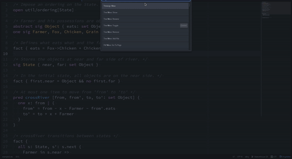

atom-alloy
Overview

This repository is an atom package for alloy modeling language. This package provides highlight syntax for Alloy files and enables to compile, execute, and visualize an alloy source code.
Because this package is just my practice of Atom.io package generation, I'm not sure whether this package is useful and whether this package is required by other people.
License
This software is released under the MIT License, see LICENSE.md.